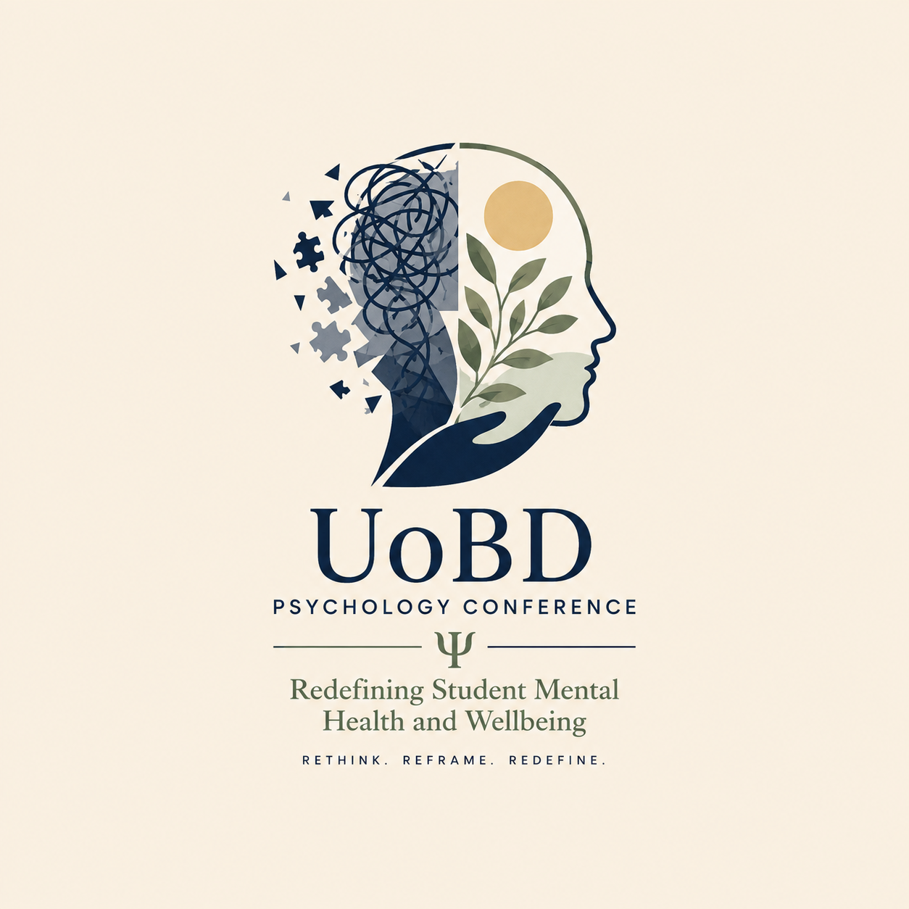
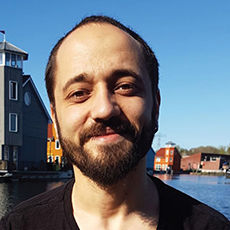
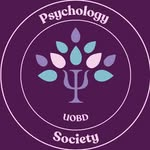

Olivia Goncalves
Assistant Professor in Psychology · Director for Undergraduate Psychology Programmes
University profileA student-staff collaboration bringing together students, researchers, educators, practitioners and community partners to rethink how educational systems understand and support student mental health and wellbeing.

As students navigate academic pressures, social transitions and wider uncertainty, there is a clear need to reassess how mental health is understood and how support is embedded within institutions. The conference creates a structured space to challenge assumptions, elevate diverse perspectives and identify realistic, system-level approaches that strengthen student mental health understanding and support.
Who's in the Driver's Seat: Exploring Self-Knowledge in the Age of Tech
Professor of Practice, American University of Sharjah · Clinical Director, Thrive Centre for Wellbeing, Dubai
At-a-glance room schedule plus the detailed oral presentation timetable.
Open programme →48Search by title, author, affiliation or keyword, and download the complete abstract booklet.
Browse abstracts →DIACCampus address, Google Maps, travel guidance, room names and contact details.
Plan your visit →Assistant Professor in Psychology · Director for Undergraduate Psychology Programmes
University profile

The conference is delivered in partnership with the UoBD Psychology Society and is partly funded by the University of Birmingham Impact Alumni Fund.